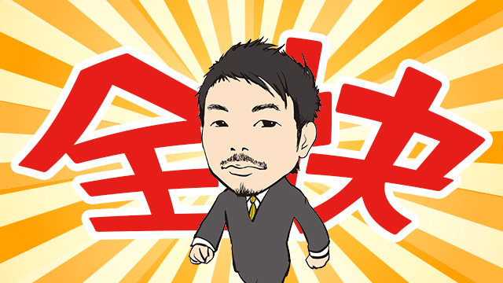

思い返せば今年の5月、突然の腹痛に襲われた私は病院に運ばれ、そのまま緊急入院しました。大腸憩室炎というこれまで聞いたこともなかった病気との出会い。キツい絶食生活、その他諸々、語り出せばきりがないくらい強烈な経験となりました。
病気自体は退院時にほぼ快癒していたのですが、「完治」とはいえないらしく、退院時にしっかりを釘を刺されていました。「数ヶ月後に精密検査をしてください」と。
一般的に大腸の検査は「検査前日が本番」と言われます。検査食を食べて下剤をのみ、腸内を完全に空にしないと効果的な検査ができないため、前日からその準備に追われるわけです。これまでの人生で下剤など飲んだことがない私としては、とても新鮮な（最悪の）体験でした。
空腹と腹痛に耐えながらいろいろなことを考えます。人間というのは、本当にちょっとしたことで行動不能になりますね。足の爪一枚はがれてもまともに行動できませんし、日常的な腹の痛みでも一気にパフォーマンスが低下します。それを実感してみると、歴史書に書かれた英雄たちのエピソードがいかにスゴイかが分かります。目に矢を受けたにも関わらず、眼球ごと矢を抜いて戦いを続けた武将。身体中に矢が刺さったまま戦い抜いた兵士。漫画などでもおなじみの情景ですが、本当にそれがあったとしたら驚くべきことです。これまた歴史書でおなじみの「毒杯を仰いでの自死」も強烈です。たかだか下剤でもこれほど苦しいのに、毒薬なんて飲んだら一体どれほどの苦痛でしょう…。「歴史上の人物に比べたらこんな苦しみたいしたことない」と自分に言い聞かせながら、眠れぬ夜を明かしました。
そして翌日、精密検査を行ったところ、結果は特に異常なし！ 晴れて完治が確認されました！
ひょっとしたら再発するかも…。ひょっとしたら憩室炎よりももっとひどい病気が潜んでいるかも…。そんな不安を抱えておっかなびっくり食事をしていた日々とはもうおさらばです。病院の帰り、マクドナルドでコッテリメニューをむさぼりながら幸せをかみしめました。「空腹は最良の調味料」なる言葉がありますが、まさに至言。何の変哲もないフライドポテトが王侯貴族のご馳走に見えました。
振り返ってみれば、今回の一連の病気でいろいろなことを学ぶことができました。その中でも一番大きかったのが、心と体の関係です。17世紀の哲学者デカルトは心と体を明確に区別し、体をただの「モノ」と見なすことによってその後の科学発展の礎を築きました。しかし、実際には心と体は驚くほど密接に絡み合っています。ほとんど「同じもの」といっても過言ではありません。病気という思わぬ出来事から改めてそれが実感できました。理性偏重＝頭でっかちになりがちな生活を改めるよいキッカケになりそうです。